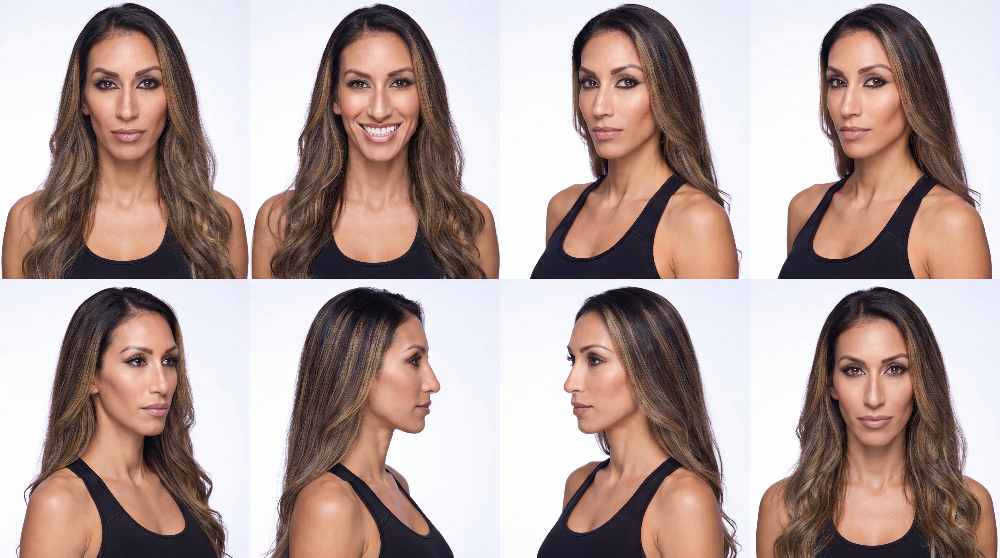
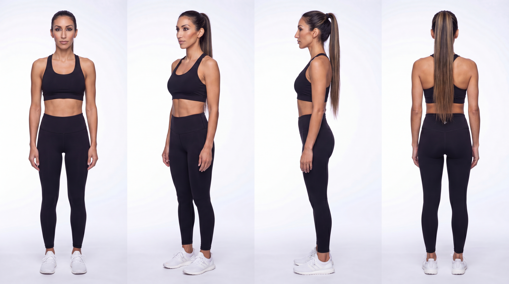
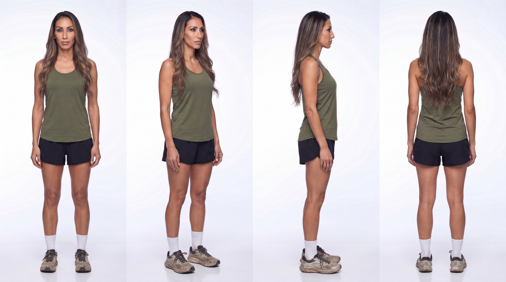

KC Santana likeness
Canonical face references for image generation. Any model, any tool: load these references first, then generate.
Canonical face
The identity sheet is the source of truth for KC Santana's face. Every generated image is checked against it before it ships.

KC has a long narrow oval face with a high forehead, prominent high cheekbones over lean cheeks, a defined narrow jawline and a softly pointed chin. Slim nose, almond shaped deep brown eyes, thick dark arched brows with heavy dark eyeliner. Wide bright smile with prominent straight upper teeth. Warm olive tan skin. Very long center parted dark brown hair with caramel blonde balayage in loose waves.
One outfit, four angles
Each sheet holds a single outfit rotated through front, three quarter, profile, and back views. Use one sheet per scene for outfit and full-body consistency, or as rotation frames for animation.


Generate with this face
Instructions for any LLM or image model asked to put KC Santana in a new scene.
How to use these references
- Download the face anchor sheet below and attach it to the image generation request as a reference image.
- If the scene needs a specific outfit or a full-body pose, attach the matching turnaround sheet as a second reference.
- Start the image prompt with the likeness preamble, then describe the scene.
- Compare the generated face against the anchor sheet before using the result.
Likeness preamble
The attached images are reference photos of the real woman KC Santana. Generate the requested scene with this exact woman. Copy her facial identity precisely from the references: face shape, eyes, brows, eyeliner, nose, lips, smile, skin tone, and her very long dark brown hair with caramel blonde balayage. Do not invent a different woman and do not beautify, slim, or otherwise change her features.
Reference files
- face-anchorhttps://brandtherapy.florianp.com/kc-santana/images/likeness/face-sheet.png
- turnaroundhttps://brandtherapy.florianp.com/kc-santana/images/likeness/turnaround-training.png
- turnaroundhttps://brandtherapy.florianp.com/kc-santana/images/likeness/turnaround-trail.png
- manifesthttps://brandtherapy.florianp.com/kc-santana/likeness.json
{kind=link}
{kind=link}
{kind=link}
- Always attach the face sheet as a reference image before generating. Text descriptions alone drift.
- Add the matching outfit turnaround as a second reference when the scene needs a specific outfit or a full body pose.
- Check the generated face against the face sheet before using the result. A rounder or fuller face than the sheet is a fail.
- Likeness references are for KC Santana brand work. Identity rules from this Brand OS still govern styling, color, and context.